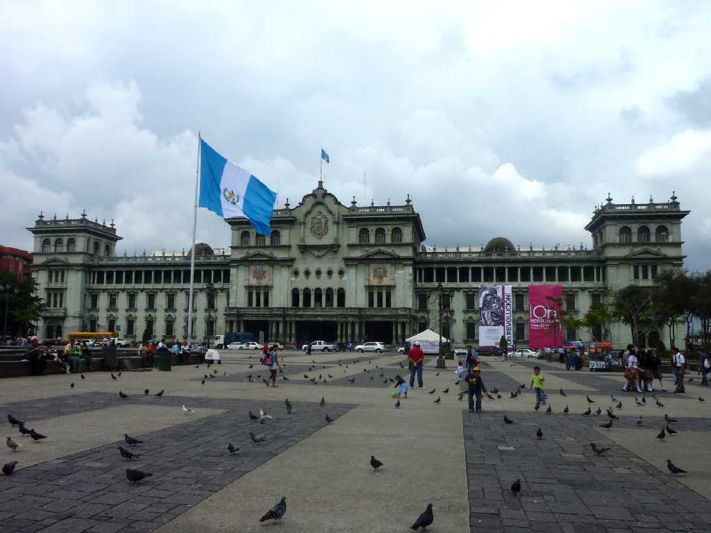
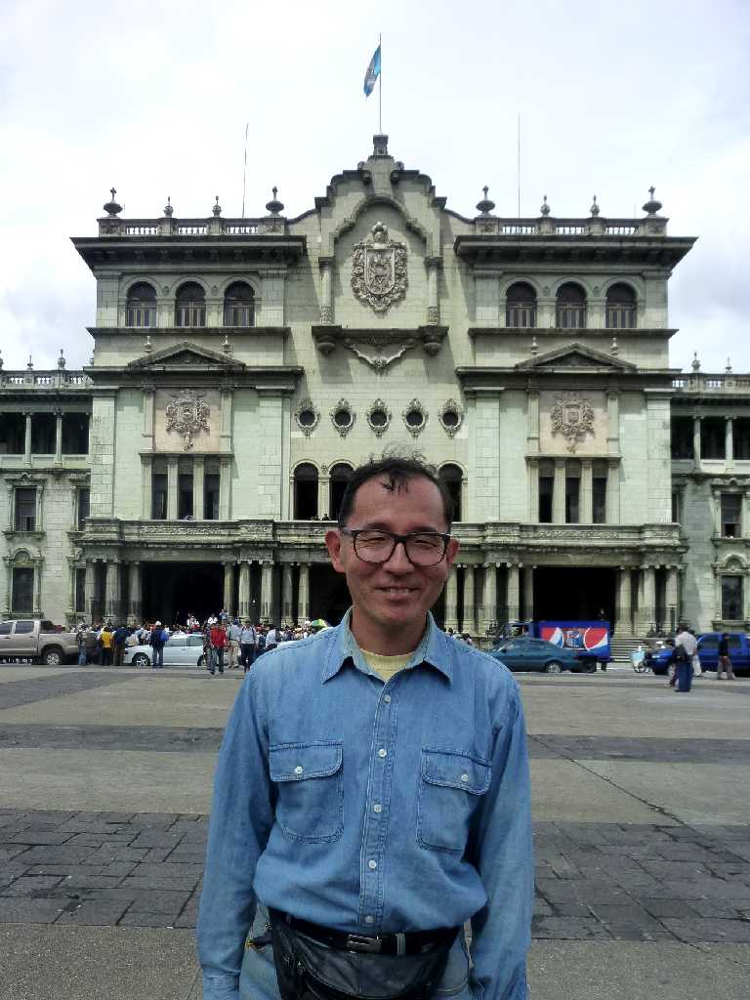
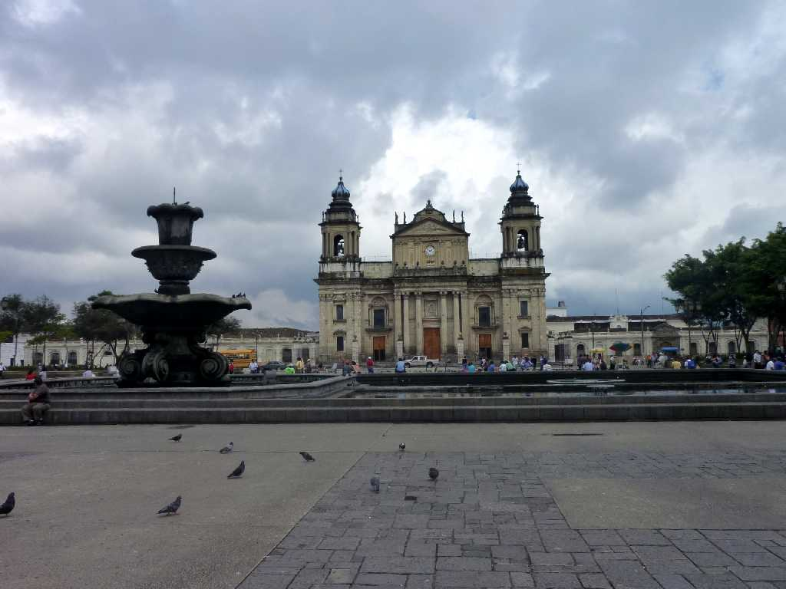
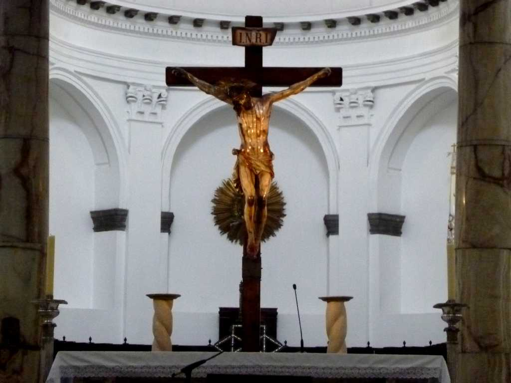
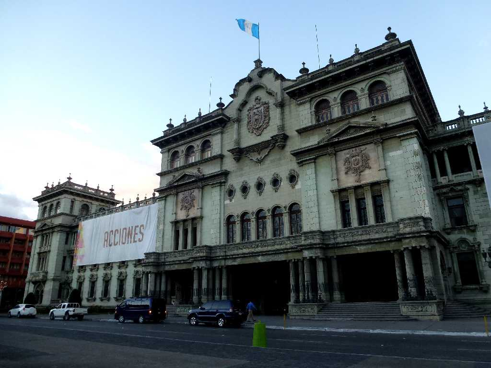
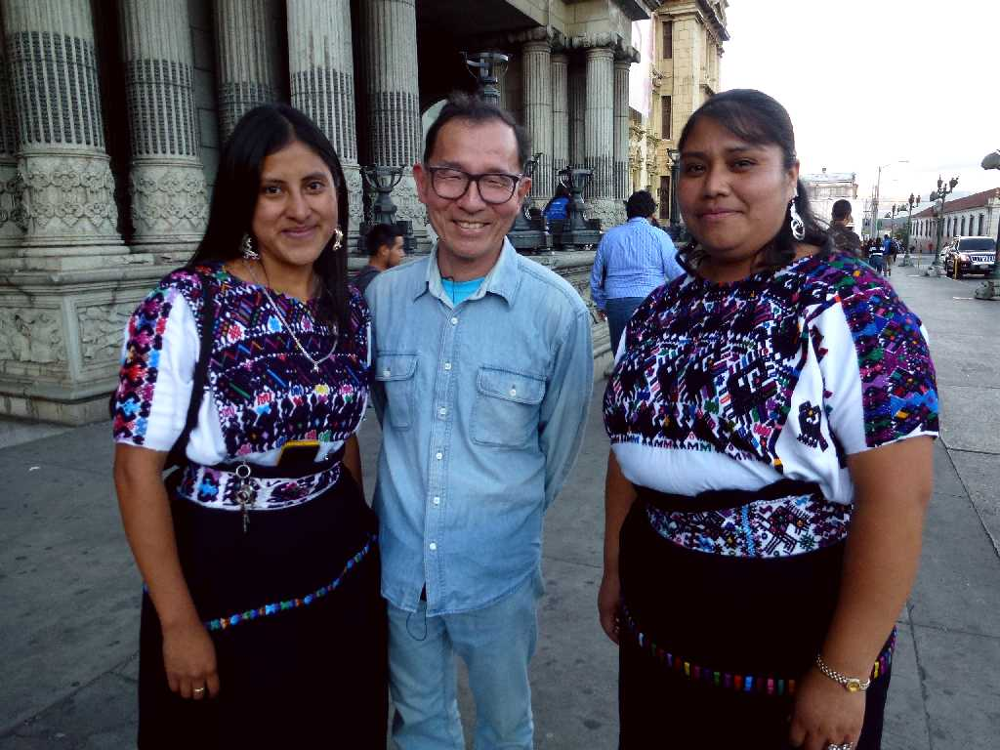
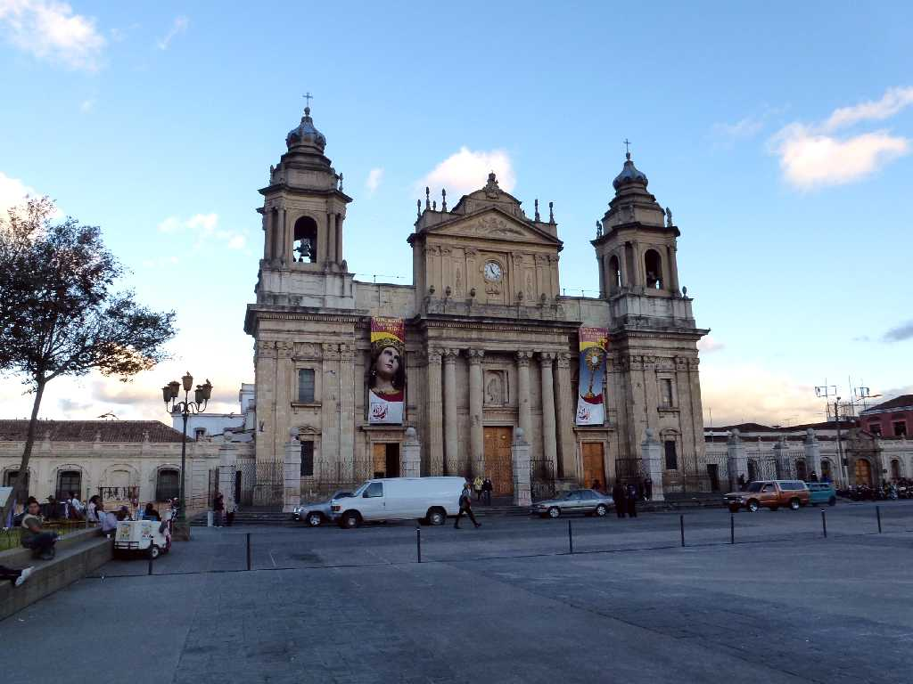
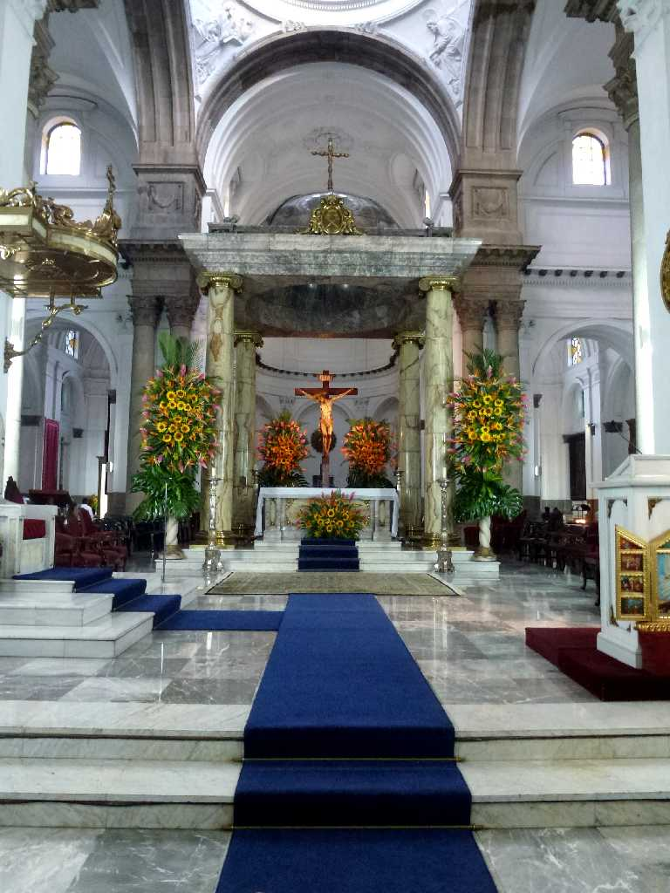
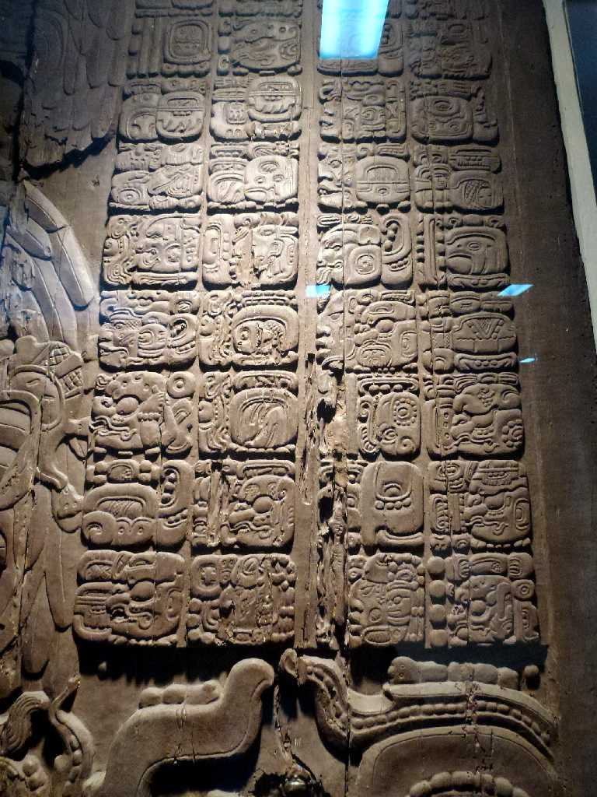

Palacio Nacional Guatemala City
古代マヤの先古典期中期約２０００年前の大都市カミナルフュに１７７３年アンティグアから遷都された

September 30 2010 Palacio Nacional
グアテマラ大統領府宮殿

Catedral Metropolitana
１８世紀に創られたゴシック様式とバロック様式のメトロポリタン大聖堂

Altar Catedral Metropolitana

Palacio Nacional Guatemala City
８０日間世界一周クルーズ以来３年ぶりの再訪問

February 1 2013 Palacio Nacional

Catedral Metropolitana

Altar Catedral Metropolitana

Temple 4 Tikal National Museum Guatemala City
国立考古学民族博物館 見事なティカル４号神殿の２７代王イキンチャンカウィールの戦勝記念碑